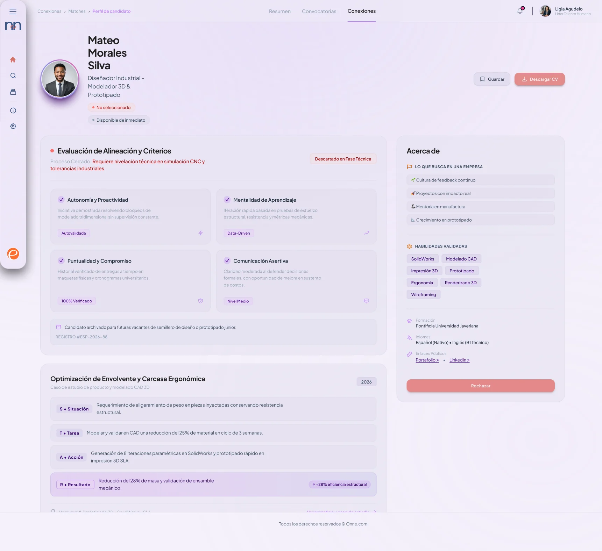

Empresa · Web
Perfil de candidato · Mateo
Ingreso
Resumen
Resumen · menú abierto
Convocatorias
Convocatorias · menú abierto
Borradores y cerradas
Publicar nueva vacante
Publicar vacante · límite de plan
Vacante publicada
Conexiones
Planes
Planes · menú abierto
Perfil de empresa
Perfil de candidata · Laura
Perfil de candidato · Mateo
Cierre de proceso · Mateo
Inicio
Estudiante · App
Estudiante · Web
Estudiante · Web oscuro
Mostrar zonas clicables